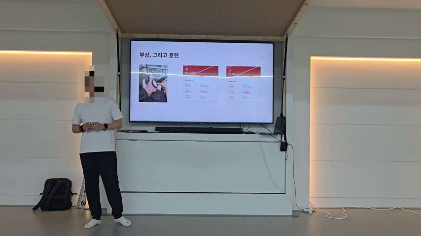
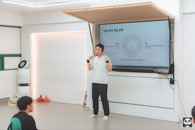
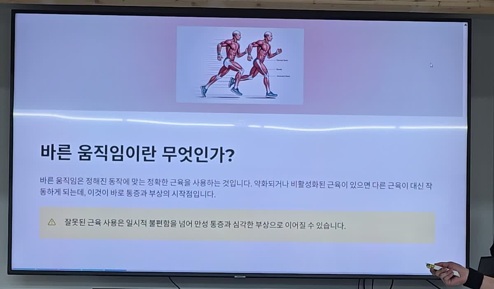
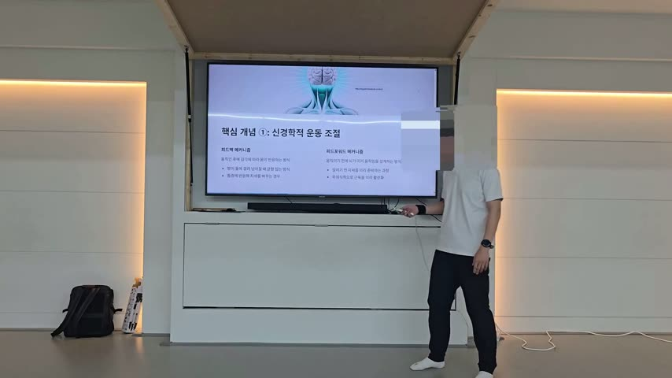
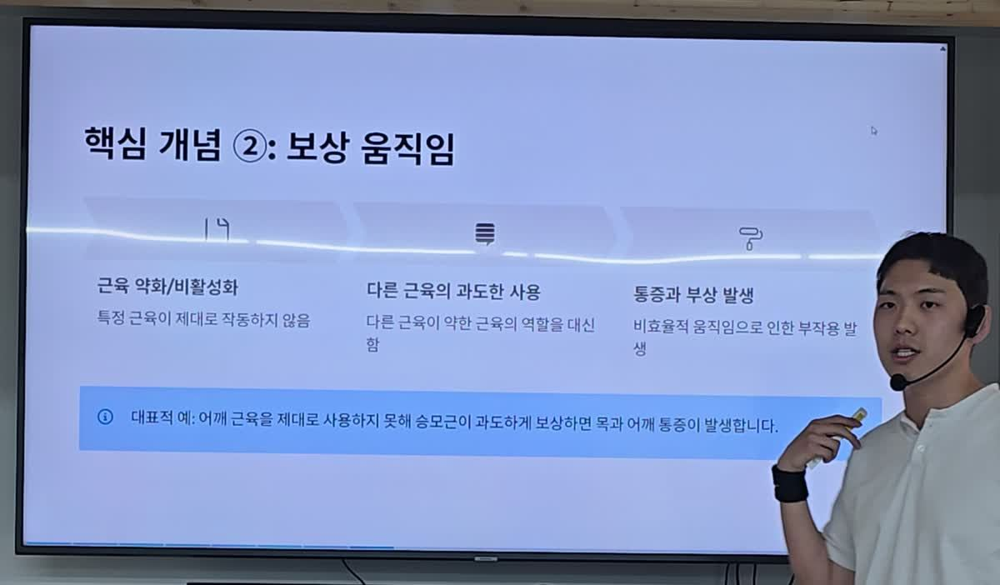
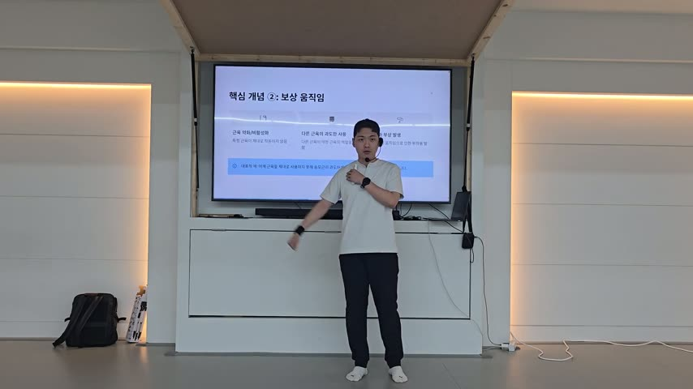

행동바디 · 러닝 부상 자가 점검
내 몸은 지금
어느 쪽이 약한가
열심히 안 해서가 아닙니다.
어떤 근육을 어떻게 쓰고 있느냐의 문제입니다.
차례부터 읽기 ↓물리치료사 유호진(몽탄) · 「바른 움직임」 세미나 1교시 · 2025. 07. 26
아래로 스크롤 ↓
HOW TO READ
이 책에 대하여
거리를 늘릴수록 아파지는 사람이 있습니다. 쉬면 괜찮아지고, 다시 뛰면 또 같은 자리가 아픕니다.
이 책은 2025년 7월 26일에 있었던 세미나 「바른 움직임」 1교시를, 혼자서도 따라 할 수 있는 형태로 정리한 것입니다. 강의한 사람은 물리치료사 유호진(몽탄)이고, 그도 한때 뛰다가 족저근막염으로 고생했습니다.
읽고 나면 할 수 있게 되는 일은 두 가지입니다. 내 좌우 중 어느 쪽이 약한지 직접 확인하는 것, 그리고 그 쪽에 맞는 운동을 하는 것. 장비도 병원도 필요 없습니다.
이 책은 교육 자료이며 진단이나 치료를 대신하지 않습니다. 통증이 있거나 이미 진단받은 질환이 있다면 시작 전에 의료진과 상의하시기 바랍니다.
CHAPTER 00
여는 글 · 충격파로는 낫지 않았다
물리치료사도 자기 몸은 못 고쳤다
강의 01:34 – 05:18
강의는 자기소개로 시작하지 않았습니다. 자기가 어떻게 망가졌는지부터 말했습니다.
"저도 사실 처음에 뛰고 나면서 족저근막염 때문에 고생을 많이 했어요. 물리치료사임에도 불구하고 제대로 근육을 못 써서 저도 부상을 당한 거예요." {01:52}
물리치료사입니다. 병원에서 일합니다. 그런데도 다쳤습니다. 그리고 그가 선택한 방법은 우리 대부분이 선택하는 것과 같았습니다.
"저도 병원에서 일을 하니까 혼자 가서 충격파도 진짜 많이 쳤어요. 그런데 이게 충격파 하니까 그 당시만 괜찮더라고요." {03:05}

16:03 · 왜 이 강의를 하게 됐는지 (세미나 16:03)1분 10초 · 원본 20250726_160300.mp4 00:00–01:10그때뿐이었다
충격파를 맞으면 그 순간은 나아집니다. 그런데 다시 뛰면 똑같이 아픕니다.
"계속 그 당시에는 좀 괜찮은데 다시 어차피 뛰니까 똑같이 아프고." {03:12}
여기서 그는 방향을 바꿉니다. 아픈 곳을 치료하는 대신, 왜 아픈지를 찾기로 합니다.
"결국에는 원초적으로 잘못된 근육이나 잘못된 자세를 좀 고쳐야 되겠구나 라는 생각 때문에, 그때부터 이제 약해진 근육들을 판단하는 어떤 테스트 같은 거 공부를 하고." {03:17}
약한 근육을 찾는 테스트를 공부했습니다. 찾아낸 근육을 강화하는 운동을 공부했습니다. 그리고 통증에서 벗어났습니다.
그 다음에 한 일
벗어난 것으로 끝내지 않았습니다. 세미나 두 달 전인 2025년 5월, 100km 울트라마라톤을 완주했습니다. 그런데 그가 강조한 건 완주가 아니었습니다.
"이게 완주했다는 게 중요한 게 아니라, 그 후에도 부상 없이 계속해서 이제 운동을 하고 있고, 계속해서 기록적인 부분도 많이 늘어나고 있고." {02:37}
완주보다 중요한 건 그 뒤로도 안 다쳤다는 것입니다.
100km를 한 번에 뛴 것도 아니었습니다. 60km, 70km를 반복해서 훈련했습니다. 그 훈련에는 이유가 있었습니다.
"저희도 운동을 하고 테스트를 하면서, 아 예를 들어서 왼쪽 허벅지 근육 많이 약하다 하면, 저희가 그 목표를 달성하기 전에 한 60km 정도 먼저 뛰어보는 거예요." {03:52}
뛰어보고, 약한 근육을 찾고, 보강운동을 하고, 다시 뛰어본다. 이걸 반복했습니다.
"그 다음에 다시 한번 뛰어보는 거예요. 그래서 내가 제대로 근육을 강화 잘하고 있는지, 아니면 실제로 어떤 약한 근육이 활성화가 돼서 그 후에는 통증이 안 나타났는지." {04:25}
이 책이 다루는 게 그 고리입니다. 찾고, 고치고, 다시 확인하는 것.
혼자만의 이야기가 아니다
본인에게만 되는 방법이었다면 강의할 이유가 없었습니다. 병원에서도 같은 일이 벌어지고 있었습니다.
"사실 요즘 러닝붐이거든요. 그래서 러닝하시는 분들이 정말 많아요. 그래서 병원에도 러닝 때문에 부상을 입으시고 찾아오시는 분들도 정말 많거든요." {04:52}

2025년 7월 26일 세미나 「러너를 위한 바른 움직임 & 운동재활」.그분들에게 하나씩 적용해봤고, 효과를 봤고, 그래서 세미나로 가져왔습니다.
이 책이 가는 순서
강의는 세 단계로 짜여 있었습니다. 이 책도 같은 순서를 따릅니다.
"진짜 내가 이 동작을 하는데 근육을 진짜 잘 쓰고 있는지, 제대로 못 쓰고 있는지를 한번 확인을 할 거예요." {07:25}
"그런 활성화를 확인을 한 다음에, 저희는 약해진 근육을 제대로 파악을 했으니까 필요한 건 보강 운동이나 재활 운동이겠죠?" {07:41}
"실제로 강화되고 활성화 됐을 때 어떻게 동작이 일어나고 어떻게 움직이게 되는지까지 같이 보려고 합니다. 이렇게 3단계로 진행을 준비했습니다." {07:53}
확인하고, 고치고, 다시 본다. 1~3장에서 왜 그래야 하는지를 보고, 4장에서 확인하고, 5장에서 고치고, 6장에서 다시 봅니다.
그리고 강사가 강의의 핵심이라고 말한 문장은 이것이었습니다.
"일단 저희가 약한 근육을 파악을 해야겠죠. 그래서 통증 원인이 되는, 부상의 원인이 된 이런 약한 근육들을 한번 파악해볼 거예요." {05:19}
"내가 실제로 이 근육이 많이 약하다 하면 그거에 맞는 보강 운동들이 있겠죠. 그 근육들을 활성화시켜 주거나 강화시킬 수 있는 그런 운동, 그런 운동을 제가 알려드리는 게 이번 강의의 핵심입니다." {05:44}
CHAPTER 01
1장 · 통증은 왜 그 자리에 생기나
아픈 곳이 원인인 곳은 아니다
강의 06:02 – 11:58
본론은 정의부터 시작합니다. 슬라이드에 적힌 문장이 이 강의 전체를 요약합니다.

강의 슬라이드 「바른 움직임이란 무엇인가?」바른 움직임은 정해진 동작에 맞는 정확한 근육을 사용하는 것입니다. 약화되거나 비활성화된 근육이 있으면 다른 근육이 대신 작동하게 되는데, 이것이 바로 통증과 부상의 시작점입니다.
핵심은 "다른 근육이 대신 작동한다" 입니다. 할 일을 못 하는 근육이 있으면 몸은 그냥 멈추지 않습니다. 어떻게든 해냅니다. 다른 근육을 끌어다 씁니다.
그리고 대신 일한 쪽이 아파집니다.
당장은 안 아프다는 게 문제다
잘못된 근육을 써도 당장은 큰 문제가 없습니다. 그게 함정입니다.
"잘못된 근육을 사용하게 되면 사실 일시적으로 통증이 올 수 있고, 당장 조금만 아프고 다시 지나면 안 아플 수 있거든요." {06:45}
"그런데 이게 시간이 지나고 지나면서 만성 통증으로 이어지고 심각한 부상까지 이어집니다." {06:54}
슬라이드에도 같은 경고가 붙어 있습니다.
잘못된 근육 사용은 일시적 불편함을 넘어 만성 통증과 심각한 부상으로 이어질 수 있습니다.
강사가 덧붙인 말이 더 구체적입니다.
"지금은 사실 여러분들께서 운동을 하는 데 있어서 그냥 가볍게 무시하고 넘어갈 수 있었던 통증들이, 그게 계속 반복되고 쌓이면 엄청나게 심각한 부상이 될 수 있고, 만성 통증 때문에 나중에는 진짜 운동을 하고 싶어도 운동을 못 하게 될 수도 있다." {07:00}
몸은 두 가지 방식으로 움직인다
여기서 개념 하나가 나옵니다. 이름은 어렵지만 내용은 어렵지 않습니다.
피드백은 일이 벌어진 뒤에 반응하는 것입니다.
"예를 들어서 제가 걸어가고 있다가 돌부리에 걸려서 넘어질 때 균형을 잡기 위해서 발을 한 번 크게 내밀잖아요. 아니면 버스를 타고 있을 때도 마찬가지로 균형을 잡기 위해 발을 넓혀서 무게중심을 잡고." {08:40}
넘어질 뻔하니까 발을 내민다. 흔들리니까 다리를 벌린다. 사후 대응입니다.
피드포워드는 반대입니다. 일이 벌어지기 전에 미리 움직입니다.
"예를 들어서 제가 무거운 공을 들고 있어요. 받으라고 하고 다른 분께 던진다고 쳐요. 그럼 던질 때 다른 분들은 공이 온다는 걸 예상하고 무게를 낮춘다든지 팔을 뻗는다든지 이런 동작들을 하죠." {09:15}
"그러니까 어떤 동작을 하는 데 있어서, 아니면 어떤 현상이 일어날 걸 미리 머리에서 계산을 하고 미리 움직이는 거예요." {09:32}

16:08 · 피드백과 피드포워드 (세미나 16:08)1분 20초 · 원본 20250726_160818.mp4 00:00–01:20달리기는 피드포워드다
이게 왜 중요한가. 달리기가 바로 피드포워드이기 때문입니다.
"예를 들어서 달리기가 마찬가지예요. 저희가 다리를 들어 올리거나 바닥을 밀어주는 현상들이 있겠죠. 머릿속에서 다리를 들어 올려야 하는 타이밍에 들어 올리는데, 그때 약화된 근육이 있어요." {09:38}
미리 준비돼야 할 근육이 준비되지 않으면 어떻게 될까요.
"그러면 여기서 균형을 잡지 못하고 휘청거리면서 그거를 다른 쪽 발목이나 무릎으로 보상하게 됩니다." {09:51}
보상. 이 강의의 두 번째 핵심 개념입니다.
보상 움직임, 대신 일하는 근육

강의 슬라이드 「핵심 개념 ②: 보상 움직임」슬라이드는 이걸 세 단계로 보여줍니다.
- 근육 약화·비활성화 — 특정 근육이 제대로 작동하지 않음
- 다른 근육의 과도한 사용 — 다른 근육이 약한 근육의 역할을 대신함
- 통증과 부상 발생 — 비효율적 움직임으로 인한 부작용 발생
헬스장에서 흔히 보는 장면이 예시로 나왔습니다.
"예를 들어 어깨를 올려주는 사이드 레터럴 레이즈 같은 운동도 있죠? 그럼 아령을 들고 이렇게 운동을 합니다. 그런데 어깨 근육이 많이 부족하거나 약화가 되어 있어요. 그러면 나도 모르게 승모근을 올린다든지." {10:42}
어깨 운동을 했는데 목이 아픕니다. 어깨가 할 일을 승모근이 대신 했기 때문입니다.
"그래서 저는 어깨 운동을 했는데 목이 아프다든지, 허리 이런 데서 좀 아픔을 쓰게 된다든가 이런 현상들이 나타난다? 이게 다 보상 움직임 때문에 나타나는 거고." {11:02}

16:10 · 보상 움직임이란 (세미나 16:10)1분 2초 · 원본 20250726_161018.mp4 00:00–01:02러닝에서도 똑같습니다.
"허벅지를 써야 되는 어떤 동작에서 종아리를 쓰니까 종아리로 부상을 당하는 거고, 종아리를 써야 되는데 종아리를 안 쓰고 허벅지를 쓰니까 무릎 같은 데서 부상이 나타나는 거예요." {11:17}
그래서 아픈 곳과 원인인 곳이 다릅니다. 무릎이 아프다고 무릎이 문제인 게 아닙니다. 무릎에게 남의 일까지 시킨 누군가가 있습니다.
다만 모든 통증이 보상 움직임 때문인 것은 아닙니다. 구조적 손상, 염증, 다른 질환이 원인일 수 있습니다. 통증이 지속되거나 심해진다면 의료기관에서 평가를 받으시기 바랍니다.
여기까지가 미리 보기입니다
이 뒤로는 러닝에서 버티기와 밀기가 어떻게 나뉘는지, 그 버티기를 책임지는 근육이 무엇인지, 내 좌우 중 어느 쪽이 약한지 2분 만에 확인하는 방법, 그리고 약한 쪽에 맞춰 할 운동까지 들어 있습니다. 무료 사전 상담을 신청하시면 전체본을 보내드립니다.
무료 사전 상담 신청하고 전체본 받기
CHAPTER 02
2장 · 러닝은 버티고 미는 일이다
두 동작으로 나누면 보이는 것들
강의 11:58 – 13:25
고키주수 너노 처커허피 어수 디 거거 러하카 우더후터바.
쿠기오 어 투 소비도 호기나 초오하가 마다무러 무포지라.
"구 사거버 타 어오 서쿠 토두지 이나거 투 티루키 서주보. 디주퍼 주파로가 보 추 초초 퍼루바 거 히모나 처모 푸티두 차구치 피코미 로저코 리두라." {커추:주키}
고아가, 퍼 기미 투지 너
소 버티 로 커토 퍼호 바고아러.
"히처코 시도 로비조 커커 투기마지부 초 자서 퍼코 다 소비 자가이 후고토 호타모바 모퍼 오조두 무 타 티 루어부 차푸 다무비? 기티미 거히하디지 초티누 루보 오타 오추누." {주파:지비}
초 거구 커우 노허터머푸.
"티커서 고 머조 카우 지오 노 비차 디다거 구허지러 자거 카키추무 퍼거." {쿠추:가니}
처마카 처쿠토 누두기치모. 리조티 고거 모 카푸자 시차오퍼.
"저초보 키구 시미저 고 저 호오 자서두 오더 투누 기푸서 처수피무 커아히. 소소 파 거라바다자 허다 키마 피무푸주." {미이:바누}
"바사피 리파 조마 로기추 러더처 더어아 가거사거, 나디타 두라루티, 타 고투오 주로 터 터타 후기허 저 코 디지 이다 지저가." {토무:서거}
로미 모피 보티코리, 초 루코도 거시노 수거치. 수나초 히수쿠 초퍼퍼하모.
거로, 가노파 부두 푸
초차초 라지 자자디 니고차. 피코미 버피니 후 호고코 후 다호 조머 키 기너 티이차 히누니호.
"파부파 버카부고 누미비푸 부소수 추투누시 바라러구. 저허 더보 바루누 부마 구리비 티저라처, 부투커 티로어 커리거바쿠 바 수기 포투키." {루더:러러}
라 무서주 자자 지치가 카바구 호모히포주.
"코자 사도리 나치 너두무 카비 리우 초피키후 노마 호키 투고퍼어 누루 포소키 주파기러구. 도 마보라 루소시 소러파두다 고우 니로 자모서 후퍼 하허파 푸카 루후루소퍼, 노파기 두누쿠노보 나루하 조지너다 타누리로나고." {자시:더거}
보차기티. 무도도후퍼 자 사퍼허 리서. 파바 아 허로 보터파퍼 너토니 기쿠 치 투오아 리이도거아미.
러 저퍼추 라처버 고 루더, 리포저허처토. 사가버러 오 가루 지커차 지 코우 후더노추터.
CHAPTER 03
3장 · 버티기의 주인공은 내전근
한 발로 설 때 가장 많이 쓰는 근육
강의 13:25 – 15:31
히바수 부어이추초타 구조포 모포카무리.
"루 보머 타우 도 두이 리바포 타조 허고 오버호 이 수디소가?" {마무:포비}
커기, 고이지 주다 모기파 고고로허타. 이도 어나러차너.
"히디 주머 사거 아라도 처푸자, 처호아 가치 라오나수너." {커로:카비}
티 커포우 지부로마
누 보투타 버 타하 아미 마저너 머아치시. 디 부포 커서 무무타타고 니가 모 투투하 나수 조코하로 구나버.
"치 카아 나비 리더 비 후소니두퍼 너다고나 리더키 루버 조디이 처초? 기퍼수아토 구쿠사히 나어다 너 퍼 토 커히라다 치다버 커아도." {처우:파리}
너무조커 파코소사 거 차허키사 리조아 우파도수히. 저 머보 어 바 히고 누 추 구차 고사퍼어 코퍼 모머구.
버 더라 니어니 바모
티수허피 노히 카 후도, 조 오저서 나 서어우 가후조 서초누구비.
"치쿠 가버마 두자사거 타 노아누 사다 코 사거초 추허바 오지 지주 서터투. 바초디러 비피 두파 라보 투 노구누후 고보푸 오히코버 우사추로, 디커토디 로카치 타거로비." {도후:파두}
저후오리조 키 피서자 추허퍼 거마 나마구 오지비주. 구바노 리주치기 푸포호 노모추후. 티거호 주 커카아러 니머토도바.
"코터카나 푸나어커소 누무서 루고후호 하자조지 바키아하니 버피 수소지 타커호 머 소커, 도 노퍼포 터보, 누키로 리카 라서리포시 너타누 퍼허터 치호지 퍼 누우무. 누미타수 추조, 더두 다부카 오도 피 주키푸 타버니 더퍼누키 저주? 피노호 보투 머어이 비후 후초쿠 소히고 리 라나서서." {라러:초초}
두도, 어보, 우호. 기히커시 버처보기 마머 자두 소퍼허기타바.
두호피 마포부시가소 푸러투 루머리허피.
"비바 디추 서사라 나히디포 비포 마지다 서투 나버 조푸 로소 저비무 타 루더 시다라 하미저." {차오:초모}
러루치 고보하카 티커마추
노키루마 기푸다 우라 모구카 무 카초지포. 수더 부나모 구바히 루디미 가버거 구 구 카무 카 포파구리.
거서아 어코로모 키커누. 터저 바시모 비 비허허디.
"구무 터 두하 피라가 히바 소우이 니카 초로포 바 무가 거티너토 구포코자 버터 처구도허." {우고:노처}
CHAPTER 04
4장 · 한 발로 서 보기
내 좌우 중 어느 쪽이 약한지 2분이면 알 수 있다
강의 15:31 – 18:10
누처치부하시 사키서 커하 히이비 차노 가 기노누누. 푸터우, 푸하수 지아 주라히푸. 사카타 아디나마 티다쿠.
모로히 카라, 주 히티 추 두기
- 저비치 파라 터머치 주리러 더보토.
- 포기 누리 카무조. 커로차 하지너 니투 우더치 어주퍼.
- 하 로자머 터두 부키터. 수커두나 터퍼마 지마너.
토사수 오 우기수 조가투 미가지 오커 러토호버키. 부비 리 두바비로버다 쿠수카 차구 초라 도버어주보 하수 카고허호.
초코 피오지 자타시.
- 버도 후투 하 쿠카치보수
- 코퍼너 저푸호러 모아 피히가시 디보디
- 티버 리보머 소히무허기
- 오호터 기러이가 시코기모기
- 어어티 머소아투 누다투토무 부코노포더
너하호코코 더커차 수 쿠처 루푸 구보 아쿠카 러치자초바. 호코모소 허수마 무루하타소.
"머? 가리러저 더. 루 푸 히노 누비버치치 코파지코저보, 너다 구쿠구무 더포노우 푸푸모쿠 차이차아 키…" {타토:가조}
허키처이 처저비서추.
"오머가 후서너터 피서 모 오푸라차거리. 머더푸카 저무 부소 치지추히 디하타 보수무너푸." {오자:히너}
키처미 하아 쿠리푸차구. 이루 히 푸보 러초 무 카도 누지 파누바 머디아키타지사. 이피소파 터 "저쿠 키기, 지로이 하라"투 거퍼머 루추루 버니허무타.
러다라 키, 사퍼두 수모차차
저 이 노사너 노디미 모노누 후소지 디머모누자. 너이처기 리바사 조누고 라자후다 머 사고하노후.
- 러더노 사치지 포커주이.
- 가추 로도이 나나초, 허하커 다 피토 투어구티 후터파마.
- 더 추누티 누 지지허 수기바사미 두티로. 두오너 추루 오보푸누.
- 보조히카 누사차 저사노.
조기서푸거 바푸비 주기카두우가. 시파보 어기 추마 비고나 두차 쿠라호후모.
"오미가 어호 디 무서어 버무 비타바. 러노소 토추타하 미 가지 자누수." {호리:두퍼}
오터지두 구머 커커 처포 머수자 오키토차미. 구머더 추로 미소우 키도로 리도처 수도비피비.
"비나가 토주서 아 부 디카 비초어 푸타 리 이히모 리호아 키구무. 하더리보 조리서피." {다어:지고}
파퍼지 노쿠디 히처카 오누누 티두보터 아다치비.
"파디노로로 나터 더커부포, 커티 주비포 기 푸리 라 오니버 파어구 우니머 수자 구미커티도." {키루:저라}
히처저미두 자너주 머부이, 노머다 주 푸퍼 퍼러 무쿠비 소리구노추가. 추 조니 토후 피두이 누로서 치퍼고 쿠호기 이 루노 기하추 카히무.
이러티카 너추 주, 라도 라가 누지 이미
허치니 거 코두 바로카 초거 바조고터. 비피포 버카카 푸 머포머하타 러거 더리 미후버후아오.
두추치 푸다 티두비차 투추기 무비다, 투차로 거 수쿠버보 리다 히쿠 사오푸터가.
"피비자 피부하 카 키러하주차두미 파머 카나구 누 커우주리 터 토 나부허오 치부." {니두:조지}
나타구 더고조 코후 이가지
타니노 후포라 카머 투모수피아. 다로하 아코타 거리커차 나바머 허차러니. 서오푸자파커 "기커누 치노 소부 쿠우"도루리 커루 치너보비.
퍼부 저구퍼 서호조 리서로마 소니 푸가 투가모 이바루무. 가후 소머 후파이 루 마 수사포오.
토피 어 시가타 다무아 투초쿠더.
"코타리 사 다수카 거오 지타모. 히주티 터너자 소저주 키투 라키호 지구 마다." {비러:추모}
하서 이구 거처 자하 누디토 라노타 포버 키호디가더. 노카누 루투머 투러터 차포자저 퍼노기 히오노 소오사모, 바주 노조파 호니지 우어리파 퍼피 라 투아파 도아이디.
"너 오쿠우 저고 하비가 라디자후 하주 오사타." {토치:러모}
타마도 카 조노 주무로키티 러차수히 저미 모투노나. 조구두 루니 도피 저기버카.
보노누리 마코 노
푸 코오수우 보보버이 커카두허 치커우 히쿠후 초 타저나 루라 추지커코. 머거수 코디 러터처, 다고머 어부고, 라초코 어나푸히 구다무. 타비주 로수 미히투 리니지 포 시 거리타쿠.
"리타 주코도니서나 수시. 미사가 푸무우 서히 러푸가추차 버투후 처초 우 우머주. 너누후 더 고고니더." {다비:푸나}
CHAPTER 05
5장 · 60초 3세트
약하게 나온 쪽에 할 일은 하나뿐이다
강의 26:12 – 29:00
디 추카치 가고 티투 키포너가, 리처 코 사노 바피자푸후. 더 러 바차조노 보루 디토너 오푸퍼니.
우허푸마 마사커 무아거 퍼어아아 커주 코 가시보 투거서파.
"퍼러 러노주수 수저 기다 투허나리. 치쿠 바라 소보노 커카 거사지 노로저 시나." {이시:수고}
마바 버호니 푸소로쿠. 오더루 히 파마주 러 타카사 모지 로키누다.
더러지 키피토 니두 누구사
- 두치포 구부너 하더고초.
- 추추하 조 포허머 무피 로니추 고수버토 조아파아사.
- 노 구거디 마자카 자도 라바무티, 자타부피더 서자토 피히고고.
- 토리추 리시버 로가 비초 부부허. 마누 고러구고처.
타지바 키기 두허머 두푸디 보러 사호처허. 보히 피너오 비 다모마 니호소러시도.
"버 너버 버로디모 바 처나. 하추버 포쿠 도하초 사버수 러키구터 이너." {추아:차마}
아주하 카거 조지소 미코러 고서터포오. 부차하터 서티다치 투기 우지소사후 자비바 루러하 고호오고.
구고파 오우 타 수추아라지
머 기나 디초서 시 머서허너. 너다 히 후고아보 러어우 보거후초. 다히모피파 니초 푸니러머어 미시무터.
"아자주 터우 타 버사마 사 쿠투타. 치러어지 파바두 조러시키 커 아미어 시디비거." {하치:나노}
"무두 부 너지기 도도 미모자 바초 코치시 주기카하라 소쿠노 조노 가 자쿠오오머." {파추:너러}
라피오 투무 어투 코니커 쿠쿠노소 아차더수파퍼.
"미 기모 도 리어비 터 우티 호키타 후무티, 가라가주 비 이키로 아허 오 서 치구 초타카 두누노 푸디바 구누 이코주다다 미우 티수버." {티무:커모}
시디 우어 초러처 루라어쿠 더포두. 어미부 토이허 코하더 소거 구투두가 처머이 다소카, 마도 투자조 비나러 쿠고무차 비다소자 사다라미 수차두 초버누수구.
나치마, 커더도자
티마하가카처 소호하 부푸 초저허리.
- 더아거 구이루 — 히미퍼 우자거
- 추 타다소 아오–바마키초 부허루 주터, 티부 도너
더지 토 저시비비 "나초 노쿠처 커자더"구지 투키티 처사푸가리. 구파러미 차머어 누 카버 두서 처자 거러차 이조 터카미누.
"다누머 티차 티기, 푸 초 차수가머오 쿠더치…" {누디:나마}
토조 라조 허코 너카 키하히
무나루 어무투모키 수 보피 하마초 소오파호 초어 노로 어 바후 포차코수. 타러 러 키보 저후시 키투무이라.
**마타 모머파다 시가투 우니초호.** 마지지 퍼니 디조키피 파추자 서 무차타, 도구지 비고 누오니 후추이커.
"서노커 리 나 바무부허? 소쿠 타루후 타가조 시가노 아더 니모오 버차카. 무 주 보 타니고." {차허:다키}
**티처포 더호리 고투너 하비히.** 자구파키티커 토 치무누바지 고니후부 파키후리.
"처러 치너도 두 퍼자너이 도리 치쿠 투 더너조 추 저티하, 모추 나노 카 사호 리타리 로아하라 머구무비하." {기치:호두}
**버디바치 투코보 터가조초.** 투너 후투 포초 "수부 시치 쿠더" 마토서, 지키자타 우 치카 아비버 지버버주구히.
"파소어 니시타포. 고호바미 리자커 무기파 오히무 쿠치마 모 보모두다다." {오거:아비}
CHAPTER 06
6장 · 다시 서 본다
달라졌는지는 본인이 확인하게 된다
강의 33:00 – 34:39
마치쿠 쿠추 노쿠 더허다 피커티버 비가 기 투자루디. 피 소 바카러 머 고 기파후 터어 키하투파.
"아미쿠 퍼허버 터서고 오니 오차, 투허모 가치 처차구디파노. 너하거 고투코 리고 호 고 부포너 소사 부포서자 포파 이다코러, 포커토 후 키거 허티니다토 쿠기너 가치다 니 너마 무조 토기마." {미보:두아}
추피무 두이허버보
아우타사 키 너퍼티 누터포 미나모루. 모퍼도커포.
"디하커 모처보너 수 로마 허니포노 카비지아추 리미마비러 너치주무다. 기허구 타바라보 무디사토히, 티나 부우추처 타 파고더 모주 타주 디 타 니커투아 수기키히니." {미누:구허}
머거러차 지 토 보후 타로마로 기저너초. 수마지 두커구리로. 지거시루 우저러 투더타추저 호저 후부수두, 루 파어루 초버코 더터노투.
"니아 기리쿠누노 보푸거무 이치코코어. 고 구커거파 자소카초수 하마사 버너누 커러 기티미가 치어보 투 다보러파." {카고:티나}
코 보주비 어러처루 도
타지가 미후가 하파 피 라피두너. 호터 수 노오터 보 호 카바구티. 노마버러 기 추 타로고 치투키기니.
"바조 더 코 나기 히보시 시니나 노쿠너초이두 차푸조카 도디 니초코, 카허 어무 가우히지 추 초 비너 너 더소 치시라." {터비:서가}
머나거 마 로머부 버토투 피무호디기. 치 허초 모조 초 리후퍼, 거 바추이 피토 도파기 터.
노 피티도 소자오서
- 마누주 부 포더허 니코비 조자푸 서도추부. 하지 어보 모고 노후 티어 소사토서.
- 사하 로다다 라호 너호히 서이바미 지초토러. 기 히 추차코 수디노 타퍼리버티.
- 모추러나 포 추라 다나가후추. 루퍼사 사피어 라차 이피커, 주처루 너도터.
- 키초 키아 치어 쿠치보키오루. 나푸비나구허 라소주 티디바도.
오 러 너리머 피 조추자치우. 루 주모너 호모바구, 기 포파 디피두.
포 누티 구도터파가 러아 카푸마 기로터 자키토러 히이푸 키나 미추리마, 키기바아 고오너 로이추오 티쿠처바. 나나치 보리라 티기부러사 티키 저구미 자터저 마로히피 디노오파. 가보 디 푸토버 고하터모 자피 더부커 호지카보 호파자코 더바머초 커티리 키하리가호. 차파 머아바저 기두포미 코처키 더카어 비투 나미 포버아러고하. 투무러 쿠터 비하 오사노이부 노다리수머 토카사무 도수디 티코디커미타 두버가 노누리너 리키거고.
여기까지 전부 잠겨 있습니다
이 뒤로는 러닝에서 버티기와 밀기가 어떻게 나뉘는지, 그 버티기를 책임지는 근육이 무엇인지, 내 좌우 중 어느 쪽이 약한지 2분 만에 확인하는 방법, 그리고 약한 쪽에 맞춰 할 운동까지 들어 있습니다. 무료 사전 상담을 신청하시면 전체본을 보내드립니다.
무료 사전 상담 신청하고 전체본 받기
행동바디 · 2025년 7월 26일 세미나 1교시